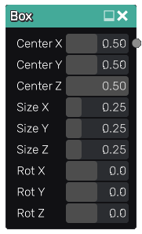

Box node¶
The Box node outputs a greyscale image that represents the depth of a 3D box.
Inputs¶
The Box node do not accept any input.
Outputs¶
The Box node provides an output that generates a greyscale image showing the selected 3D box.
Parameters¶
The Box node has the following parameters:
the box center position as X, Y and Z coordinates
the box size along X, Y and Z axes
the rotation of the box around X, Y and Z axes